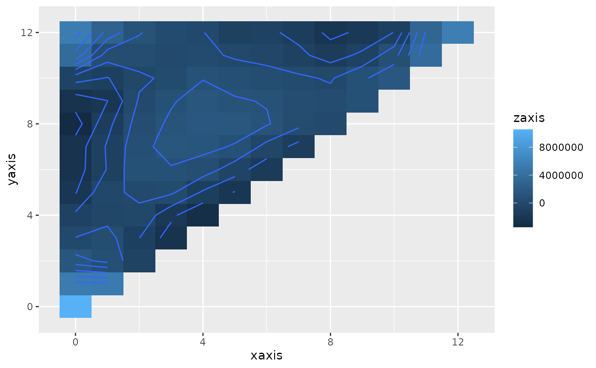

Estimated third order moment for a time series.
Usage
third(
data,
n.lag,
centre = TRUE,
outmax = TRUE,
plot = lifecycle::deprecated()
)Arguments
- data
a vector of equally spaced numeric observations (time series).
- n.lag
the number of lags, maximum = length of time series.
- centre
centre series by subtracting mean (default=TRUE).
- outmax
display the (x,y) lag co-ordinates for the maximum and minimum values (default=TRUE).
- plot
![[Deprecated]](figures/lifecycle-deprecated.svg) Use
Use autoplot.third()on the returned object instead. See examples.
Value
an object of class "third" (a list) with the following elements:
waxis: the axis from
-n.lagton.lag.third: the estimated third order moment in the range -n.lag to n.lag, including the symmetries.
n.lag: the maximum lag.
Pass the result to autoplot() to draw the contour plot.
Details
The third-order moment is the extension of the second-order moment
(essentially the autocovariance). The equation for the third order moment at
lags (j,k) is: \(n^{-1}\sum X_t X_{t+j} X_{t+k}\). The third-order moment
is useful for testing for non-linearity in a time series, and is used by
nonlintest().
Author
Adrian Barnett a.barnett@qut.edu.au
Examples
# \donttest{
t <- third(CVD$cvd, n.lag = 12)
#> Maximum at (including symmetries):
#> 0 0
#> Minimum at (including symmetries):
#> -8 8 0 -8 0 8
autoplot(t)

# }